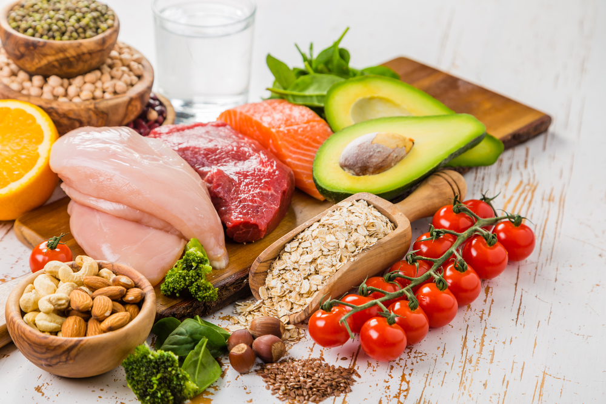

Корм, ориентированный на питание средней собаки, содержит большое количество белка, углеводов и жира.
В зависимости от содержания воды различают сухие и влажные корма. Рецептура еды для собак составляется таким образом, чтобы в ней были максимально сбалансированывсе питательные вещества.
Готовая еда существенно упрощает содержание питомца, позволяя хозяевам обеспечить ему полноценный рацион со всеми витаминами и минеральными веществами.
Гранулированный продукт промышленного производства может иметь разную форму и размеры частиц.

Отличается и уровень качества разных по классу кормов, меняется их состав.
Производители учитывают даже интенсивность физических нагрузок, которые питомец привык переносить.
Сухой корм для собак представляет собой гранулы или подушечки из смеси ингредиентов, таких как: источники животного белка (мясо или субпродукты),
дегидрированное мясо, углеводы (злаковые, бобовые или картофель), животные жиры (рыбий или куриный) и клетчатка (пульпа сахарной свеклы и др.).
Витаминно-минеральные комплексы добавляют уже после приготовления корма в виде напыления, так как они не выдерживают термическую обработку.